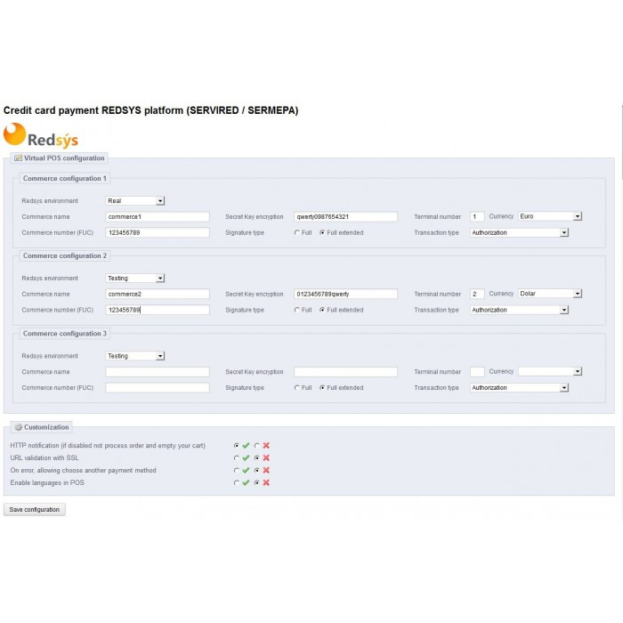

<section class="oe_container">
    <div class="oe_row oe_spaced">
        <div class="oe_span12">
            <h2 class="oe_slogan">La gestión de tu tienda en pocos clicks</h2>
            <h3 class="oe_slogan">rápido, barato, seguro</h3>
        </div>
        <div class="oe_span6">
            <div class="oe_demo oe_picture oe_screenshot">
                <a href="https://www.openerp.com/">
                    
                </a>
                <div class="oe_demo_footer oe_centeralign">Muestra del Menu Principal</div>
            </div>
        </div>
        <div class="oe_span6">
            <p class='oe_mt32'>
                Con este módulo podras gestionar un pequeño negocio sin necesidad de tener que
                pre configurar grandes datos de información para empezar a funcionar.
            </p>
            <p>
                Esta totalmente integrado con Odoo 8.0.1 y se aprovechas de sus increibles
                virtudes para hacerte la vida mas fácil.
            </p>
            <div class="oe_centeralign oe_websiteonly">
                <a href="http://www.openerp.com/" class="oe_button oe_big oe_tacky">Start your <span class="oe_emph">free</span> trial</a>
            </div>
        </div>
    </div>
</section>
